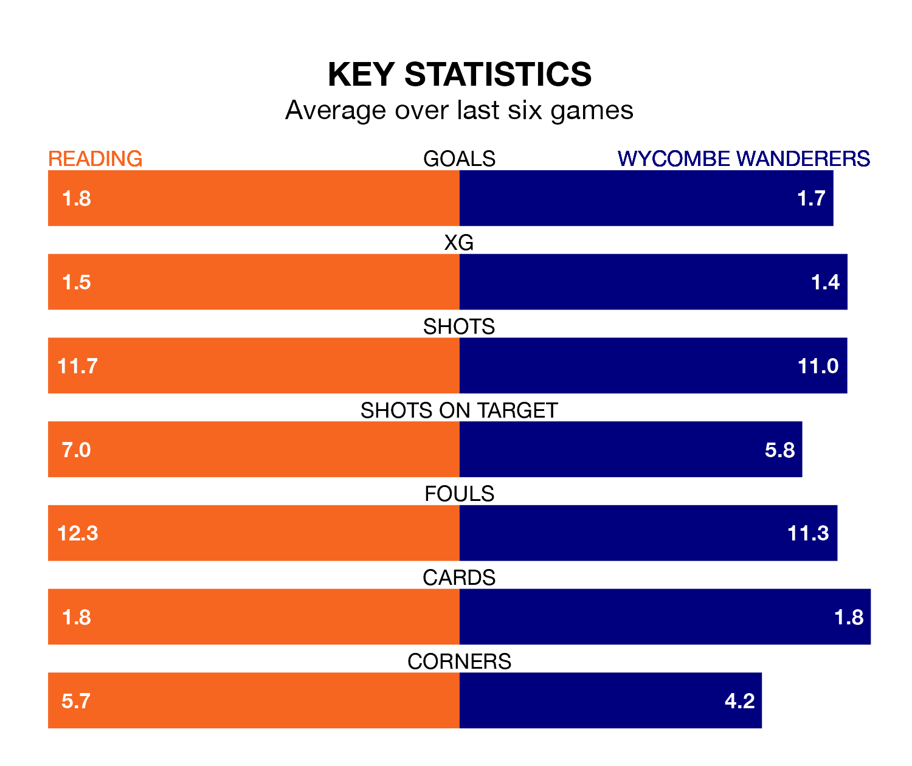

Wycombe Wanderers travel to Reading on Saturday in EFL League One.
The visitors come into the game on the back of a defeat in their last match, having lost to Barnsley 4-2 at home, with goals from Kieran Sadlier and Dale Taylor.
The Royals, meanwhile, won their last match, 3-1 against Carlisle United, with their goals scored by Harvey Knibbs and Sam Smith.
With 49 goals in 36 games so far this season, Reading are scoring more than average in the league with 1.4 goals per game. But they are conceding more than average too, letting in 53 goals at a rate of 1.5 per game.
Wycombe, meanwhile, are average scorers, with 1.3 goals per game. They have conceded 1.4 goals per game.
In the last five years, Reading and Wycombe have played each other on four occasions. Reading won two of them, Wycombe one, and they drew once.
On average, the Royals scored 1.0 goal and the Chairboys 0.8 in those matches.
Their last meeting was on November 25, when Reading won 2-1 away.
Wanderers are 16th in the table after 35 games, of which they have won 10 and drawn 11, earning 41 points.
The Royals are two places ahead of the Chairboys in 14th, with 12 wins and nine draws putting them on 45 points.
The hosts are in mixed form in EFL League One, with three wins and a draw from their last six games.
With two wins and a draw over that period, the away team's form is worse – they have taken seven points from 18, compared to Reading's 10.
Saturday's match will be refereed by Carl Brook, who has taken charge of 11 EFL League One games so far this season, issuing one red card and booking 54 players. He has awarded four penalties.
The last Reading game Brook refereed was a 1-1 home draw with Oxford United on December 12. He is yet to oversee a match featuring Wycombe this season.
Updated: 09:34 (UTC), 08/03/24